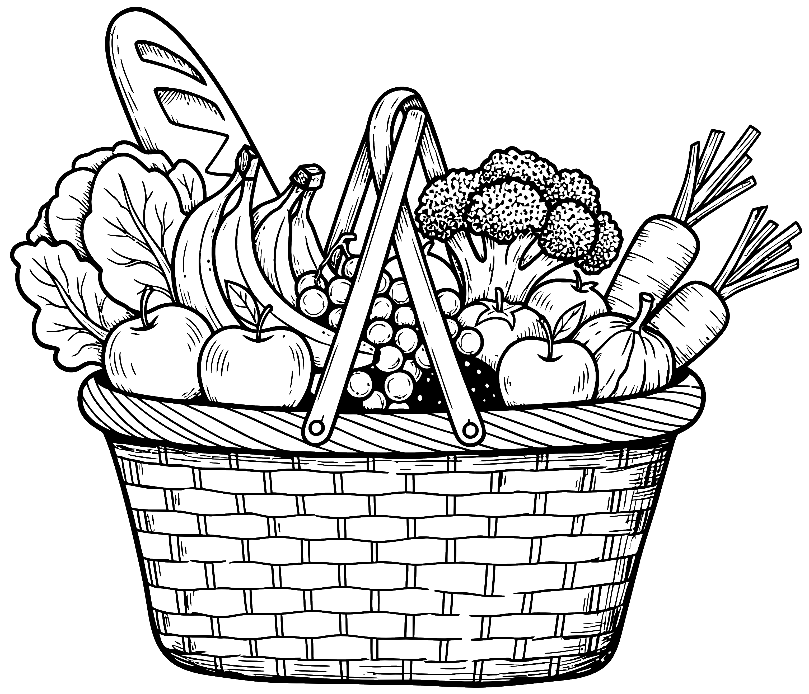

Le Petit Marché
de mon Estomac
Harmonie & Digestion
Identifiez votre profil digestif
🟢 Neutre
🔥 Acidité
🥛 Lactose
🌾 Gluten
💨 Irritable
📱 Installer l'application
Profil : 🟢 Neutre
💾 Sauvegarder
📂 Restaurer
← Home
+ Ajouter
Profil : 🟢 Neutre
Votre Profil
Exemples de pathologies liées
Annuler
✅ Confirmer ce profil
Annuler
Fiche
Nom de l'aliment
Photo
Type de Produit
Légume
Fruit
Féculent
Légumineuse
Bœuf
Veau
Porc
Poulet
Dinde
Canard
Cheval
Agneau
Gibier
Abats
Charcuterie
Poisson
Crustacé / Mollusque
Produit Laitier / Fromage
Catégorie / Saison
Printemps
Été
Automne
Hiver
Féculents
Légumineuses
Viandes
Poissons & Fruits de mer
Produits Laitiers & Œufs
Tolérance Digestive
🟢 Très conseillé (Tolérés)
🟡 Moyen (À modérer)
🔴 Proscrire (Irritant/Fibres dures)
🏷️ Matrice Clinique
FODMAPs
N/A
Bas 🟢
Haut 🔴
Fructose
N/A
Bas 🟢
Haut 🔴
Fibres
N/A
Solubles 🟢
Insolubles 🔴
Sans ⚪
Charge Glycémique
N/A
Bas 🟢
Moyen 🟡
Élevé 🔴
Acidité (Estomac)
N/A
Doux 🟢
Acide 🔴
Graisses (Vidange)
N/A
Maigre 🟢
Gras 🔴
Lactose
N/A
Sans 🟢
Avec 🔴
Gluten
N/A
Sans 🟢
Avec 🔴
Dureté (Chair)
N/A
Fondante / Hachée 🟢
Ferme 🟡
Dure / Fibreuse 🔴
Avantage
Inconvénient
Préparation recommandée
📝 Notes personnelles
🔗 Liens de recettes
+ Ajouter une autre recette
Enregistrer la fiche